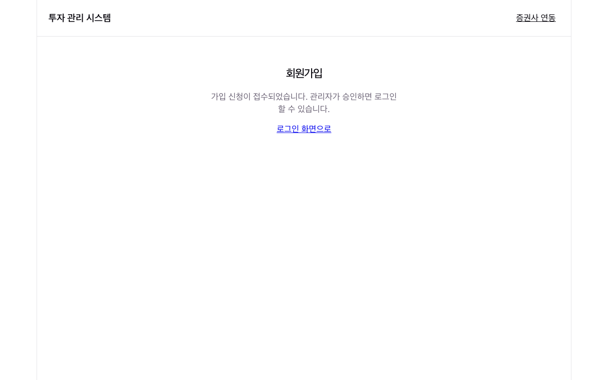
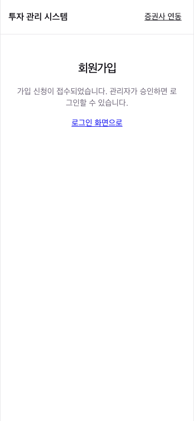
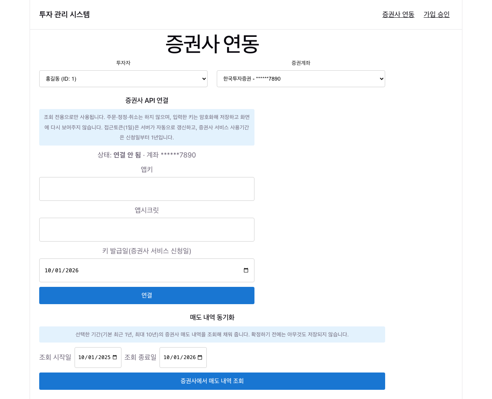
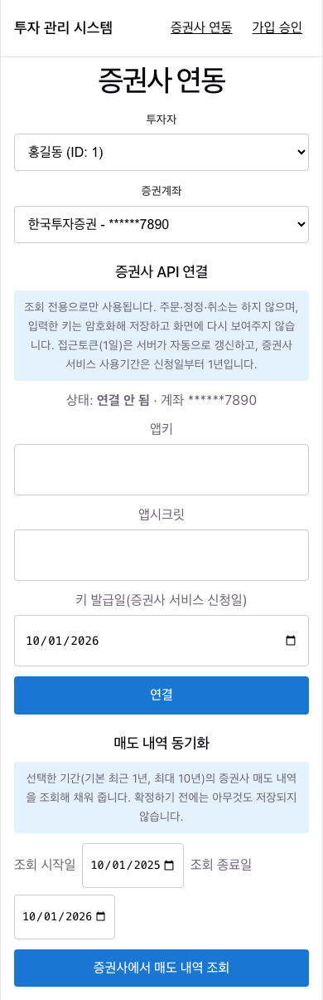
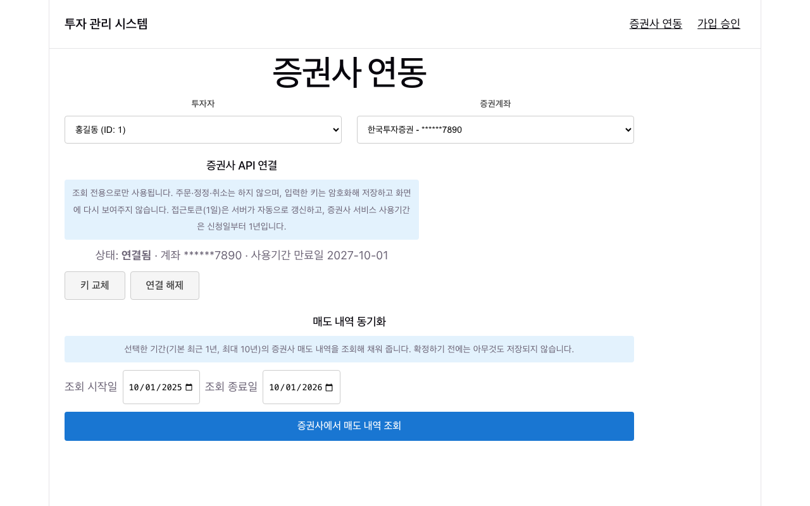
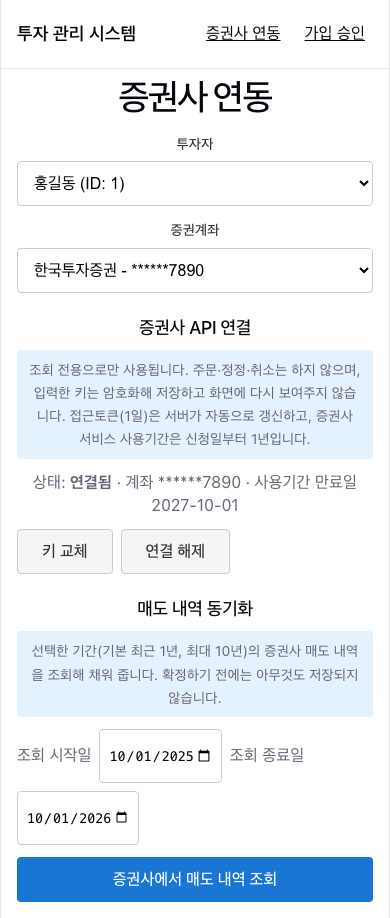
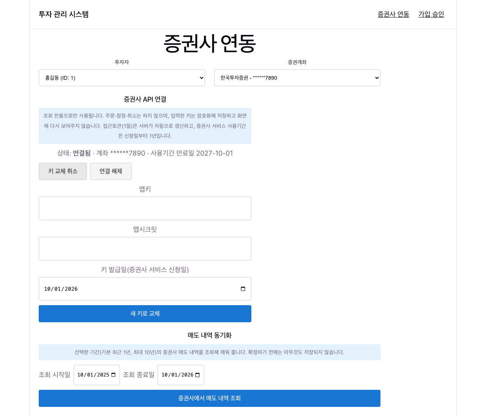
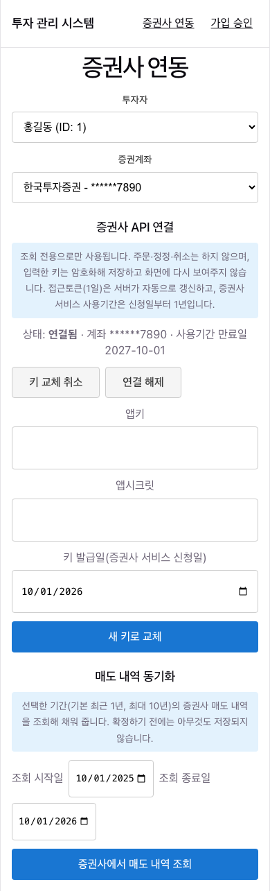
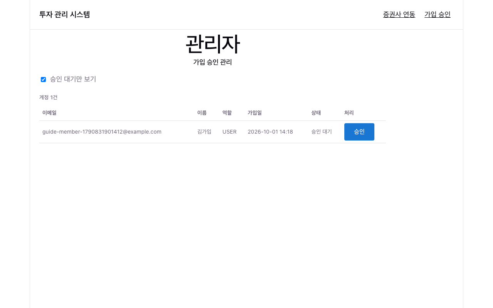
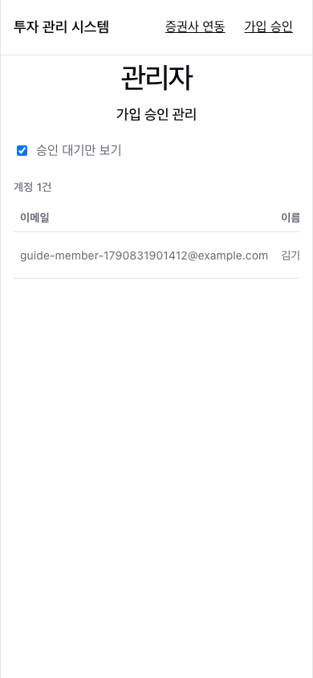

1. 시작하기 전에
- 이 서비스는 본인 계좌, 본인이 발급받은 키로 본인 자산의 매도 내역을 조회하는 개인용 도구입니다. 입력한 키는 암호화해 서버에 저장하고 화면에 다시 보여주지 않습니다.
- 현재 지원하는 증권사는 한국투자증권(KIS) 하나입니다. 다른 증권사 계좌는 "아직 API 연동을 지원하지 않습니다"로 표시됩니다.
배포 전 확인 사항. 한국투자증권 안내에는 Open API 이용 대상이 본인 자산을 본인 전략으로 쓰는 개인·법인이며, 주문·계좌 연동을 고객에게 제공하는 서비스는 제휴계약이 필요하다는 취지의 문구가 있습니다(검색 결과로 확인했고 약관 본문은 직접 읽지 못했습니다). 그래서 이 서비스는 일반 사용자에게 공개하지 않고 비공개(관리자 승인) 방식으로 운영합니다. 다른 사람에게 배포하려면 약관 원문과 법률 검토가 먼저 필요합니다.
2. 증권사에서 키 발급받기
한국투자증권의 Open API 개발자센터(KIS Developers)에서 서비스를 신청하면 APP Key와 APP Secret을 발급받습니다. 신청 요건은 한국투자증권 계좌 보유와 HTS 서비스 신청입니다. 화면 구성은 증권사 쪽 사정으로 바뀔 수 있으니 안내에 따라 진행하세요.
- 사용기간은 신청일부터 1년입니다. 갱신하면 APP Key·Secret이 새로 발급되므로, 그때 이 서비스에서도 키를 교체해야 합니다(6장).
- 3개월 이상 거래가 없으면 서비스가 해지될 수 있다는 안내가 있습니다. 해지되면 다시 신청해야 합니다.
- 접근토큰은 1일마다 만료되지만 서버가 APP Key·Secret으로 자동 재발급하므로 직접 할 일은 없습니다.
- APP Secret은 발급 직후에만 확인할 수 있는 경우가 많으니 안전한 곳에 보관하세요.
3. 가입과 승인
비공개 운영에서는 가입해도 관리자가 승인하기 전에는 로그인할 수 없습니다. 가입하면 아래 안내가 나오고, 승인되면 로그인 화면에서 평소처럼 로그인합니다. 승인 전에 로그인하면 "관리자 승인 대기 중입니다"가 표시됩니다.


4. 증권계좌 연결하기
- 상단의 증권사 연동을 누릅니다.
- 투자자와 증권계좌를 차례로 고릅니다. 증권계좌가 한국투자증권이어야 연결 폼이 나옵니다.
- 앱키, 앱시크릿을 입력합니다(입력칸은 가려지고 자동완성이 꺼져 있습니다).
- 키 발급일(증권사 서비스 신청일)을 확인합니다. 기본은 오늘이며, 실제 신청일이 다르면 고쳐 주세요. 사용기간 만료 안내가 이 날짜에서 계산됩니다.
- 연결을 누릅니다.


연결되면 상태가 연결됨으로 바뀌고 마스킹된 계좌번호와 사용기간 만료일(발급일 + 1년)이 표시됩니다. 연결 시점에는 증권사를 호출하지 않으므로 키가 틀려도 이 단계에서는 알 수 없고, 첫 동기화 때 확인됩니다.


5. 매도 내역 동기화
- 조회 시작일·종료일을 고릅니다. 기본은 오늘까지 최근 1년이고 최대 10년까지 조회할 수 있습니다. 기간을 바꾸는 것만으로는 증권사를 호출하지 않습니다.
- 증권사에서 매도 내역 조회를 누릅니다. 결과 위에 조회한 기간이 표시됩니다.
- 매칭된 매도(우리 쪽 배정과 연결된 건)는 표에서 단가·금액·수수료·세금을 고칠 수 있고, 등록할 건만 체크한 뒤 선택한 N건 매도로 등록을 누르면 저장됩니다. 확정하기 전에는 아무것도 저장되지 않습니다.
- 같은 일자·종목의 분할 매도는 증권사가 하루 단위로 합쳐서 알려 줍니다. 단가는 금액÷수량으로 계산한 값이니 필요하면 고쳐 주세요.
자동으로 채우지 못한 내역
| 안내 문구 | 뜻과 조치 |
|---|---|
| 이 종목의 배정 기록이 없습니다 | 청약·배정이 등록되지 않은 종목입니다. 청약·배정을 먼저 등록하거나 매도를 수동으로 등록하세요. |
| 같은 종목의 배정이 여러 건이라 자동으로 고를 수 없습니다 | 어느 배정인지 정할 수 없습니다. 수동으로 등록하세요. |
| 이미 같은 내용으로 등록돼 있습니다 | 이미 등록한 매도입니다. 할 일은 없습니다. |
| 그날 등록된 매도 합계가 증권사 집계와 다릅니다 | 이미 등록한 매도의 수량·금액·수수료·세금 합이 증권사 값과 다릅니다. 직접 확인해 주세요. |
| 매도 수량이 배정 수량을 넘습니다 | 배정 수량보다 많이 팔린 것으로 조회됩니다. 배정 수량이나 매도 내역을 확인해 주세요. |
| 종목코드가 없는 IPO의 배정 N건은 자동으로 맞출 수 없습니다 | 해당 공모주에 종목코드가 없어 연결할 수 없습니다. 수동으로 등록하세요. |
조회 횟수 제한. 같은 증권계좌는 10초에 1번, 1시간에 30번까지 조회할 수 있습니다. 넘으면 "요청이 너무 잦습니다. N초 뒤에 다시 시도해 주세요."가 표시됩니다. 증권사도 초당 호출 제한이 있어 서버가 자동으로 잠시 쉬었다가 다시 시도합니다.
6. 키 갱신·교체·해제
- 만료 안내: 사용기간 만료일이 30일 안으로 다가오거나 지나면 화면에 경고가 나옵니다(상태 "사용기간 만료"). 증권사에서 서비스를 갱신하면 키가 바뀌니 그때 교체하세요.
- 키 교체: 키 교체를 누르고 새 앱키·앱시크릿·발급일을 입력한 뒤 새 키로 교체를 누릅니다. 기존 키와 저장된 접근토큰은 새 키로 바뀝니다.
- 연결 해제: 확인 후 저장된 키가 삭제됩니다. 다시 쓰려면 키를 새로 입력해야 합니다.


키 등록·교체는 같은 계정에서 10분에 5번까지 가능합니다. 입력을 여러 번 틀리면 잠시 기다린 뒤 다시 시도하세요.
7. 문제 해결
| 표시되는 문구 | 원인 | 조치 |
|---|---|---|
| 증권사 인증에 실패했습니다. 키가 만료됐거나 잘못됐을 수 있으니 키를 갱신해 주세요. | 입력한 키가 틀렸거나 사용기간이 지났거나 서비스가 해지됨 | 증권사에서 서비스 상태를 확인하고 새 키로 교체 |
| 요청이 너무 잦습니다. N초 뒤에 다시 시도해 주세요. | 이 서비스의 조회·키 변경 횟수 제한 | 안내된 시간 뒤 다시 시도 |
| 증권사 요청 제한에 걸렸습니다. 잠시 후 다시 시도해 주세요. | 증권사의 초당·분당 호출 제한이 계속됨 | 1분쯤 뒤 다시 시도 |
| 증권사 조회에 실패했습니다. 잠시 후 다시 시도해 주세요. | 증권사 서버 오류 또는 일시 장애 | 잠시 뒤 다시 시도, 계속되면 증권사 공지 확인 |
| 서버에 증권사 연동 설정이 없어 지금은 …할 수 없습니다. | 서버에 증권사 키 암호화 설정(APP_ENCRYPTION_BROKER_KEY)이 없음 | 서버 관리자에게 문의 |
| 이 증권계좌의 증권사는 아직 API 연동을 지원하지 않습니다. | 한국투자증권이 아닌 계좌 | 수동 등록 사용 |
| 관리자 승인 대기 중입니다 | 가입 승인 전 | 관리자에게 승인 요청 |
8. 관리자: 가입 승인
관리자 계정으로 로그인하면 상단에 가입 승인 링크가 보입니다(일반 계정에는 보이지 않습니다). 승인 대기 계정을 확인하고 승인을 누르면 그 계정이 로그인할 수 있습니다. 전체 보기로 바꾸면 승인된 계정도 보이며 승인 취소를 누르면 그 계정은 바로 로그아웃되고 다시 승인될 때까지 로그인할 수 없습니다. 본인 계정은 취소할 수 없습니다.


운영 설정
- 가입 모드(
APP_SIGNUP_MODE):APPROVAL(기본, 승인 뒤 로그인),OPEN(누구나 가입해 바로 로그인),CLOSED(가입 중단). - 첫 관리자는 가입한 뒤 서버에서
scripts/promote-admin.sh <이메일>로 지정하고 다시 로그인합니다. 환경설정 파일로는 지정하지 않습니다(이메일 인증이 없어 남이 먼저 가입해 두면 관리자가 될 수 있기 때문). - 서버 암호화 키는 DB 백업과 다른 곳에 보관하세요. 잃어버리면 저장된 계좌번호를 되살릴 수 없습니다. 키 교체 절차는
docs/guide-backend.md6절에 있습니다.